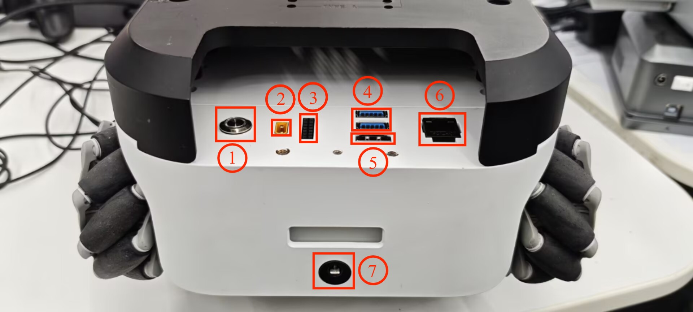
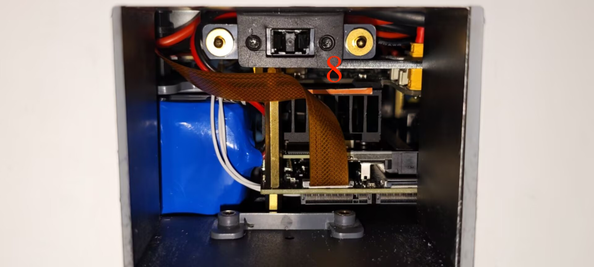
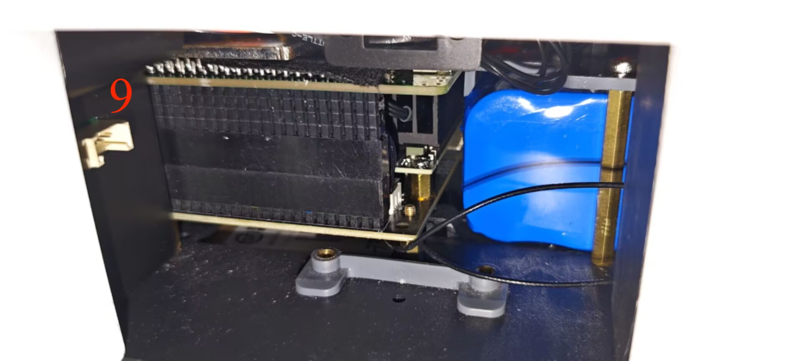

myAGV Plus Parameter Description
In the first chapter, we explored the product's selling points and design philosophy, providing you with a panoramic view for a high-level understanding of the product. Now, let's move on to Chapter Two—Robot Parameter Description. This chapter will be key to understanding the product's technical details. Thoroughly understanding these technical parameters will not only help you fully appreciate the product's advanced features and practicality but also ensure that you can utilise these technologies more effectively to meet your specific needs. Important Note: The specific parameters of myAGV Plus may vary depending on the version purchased. Please refer to the specifications of the actual delivered version as the final standard!!!

1.Product specifications
| Indicator | Parameters |
|---|---|
| Name | Mobile Robot |
| Model | myAGV Plus |
| Motors | FOC planetary brushless gear motor |
| Wheels | Mecanum Wheels |
| Payload | 8Kg |
| Weight | <5Kg |
| Laser Radar Scanning Range | 0.12-8M |
| Laser Radar Angle | 360° |
| Built-in Camera | 8 megapixels 77° field of view 2.96mm focal length |
| Standby Time | -- |
| Endurance | -- |
| Maximum Movement Speed | 1.6m/s |
| Power Supply | 25.2V, 1.5A |
| Operating Temperature | -5°C-45°C |
2.Control core parameters
| Index | Parameter |
|---|---|
| Main Control | Jetson orin nano Super 8GB |
| CPU | Architecture: ARM Number of Cortex-A57：6 Maximum Clock Frequency:1.728 GHz L2 Cache:1.5 MiB |
| GPU | NVIDIA Ampere architecture, 1024 CUDA cores |
| Memory | 8 GB |
| Bluetooth | Onboard, can be enabled via rfkill unblock bluetooth |
| Wireless | Realtek RTL8822CE 802.11ac Wireless Network Card |
| Core Video Interface | HDMI interface*1 DisplayPort(DP)interface*1 |
| USB | USB 3.0 *2 |
| Ethernet | RJ45*1 |
| IO | G7, G8, G9, G10, G11, G17, G18, G22, G23, G24, G25, G27 |
3.Mechanical structure parameters
3.1Specifications and sizes

3.2Through-hole installation

4.Electrical characteristics parameters
4.1 Overview of surface electrical interfaces

| Number | Interface | Definition | Function | Remark |
|---|---|---|---|---|
| 1 | Switch | control input power on and off | With lights (lights on) | |
| 2 | Power supply interface of robot arm | Supply power to my series robot arm (12V 5A) | ||
| 3 | DC/IO interface | 3.3 | DC3.3V | |
| 17 | GPIO 17 | |||
| 27 | GPIO 27 | |||
| 22 | GPIO 22 | |||
| 10 | GPIO 10 | |||
| 9 | GPIO 9 | |||
| 11 | GPIO 11 | |||
| G | GND | |||
| 10 | GPIO 10 | |||
| 23 | GPIO 23 | |||
| 24 | GPIO 24 | |||
| 25 | GPIO 25 | |||
| 8 | GPIO 8 | |||
| 7 | GPIO 7 | |||
| 4 | USB3.0 | USB3.0*2 | Can be connected to external devices or U disk shion | |
| 5 | HDMI | use to connect a screen | ||
| 6 | network port | Ethereum | Ethernet port communication | |
| 7 | Power DC Input interface | 25.2V 1.5A | power input |
1.1 Switch : Power switch is used to control the main power input. If it is switched off, the controller is also powered off.
1.2 Power supply interface of robot arm : banana plug female, model XT30UPB-F, to supply power to my series robot arm (12V 5A).
1.3 DC/IO interface : The IO interface group is Dupont interface of 2.54mm, and 2.54mm Dupont wire can be used externally.
| Label | Signal | Type | Function | Notes |
|---|---|---|---|---|
| 3.3 | 3.3V | P | DC 3.3V | |
| 17 | GPIO17 | I/O | GPIO17 | |
| 27 | GPIO27 | I/O | GPIO27 | |
| 22 | GPIO22 | I/O | GPIO22 | |
| 10 | GPIO10 | I/O | GPIO10 | |
| 9 | GPIO9 | I/O | GPIO9 | |
| 11 | GPIO11 | I/O | GPIO11 | |
| G | GND | p | GND | |
| 18 | GPIO18 | I/O | GPIO18 | |
| 23 | GPIO23 | I/O | GPIO23 | |
| 24 | GPIO24 | I/O | GPIO24 | |
| 25 | GPIO25 | I/O | GPIO25 | |
| 08 | GPIO8 | I/O | GPIO8 | |
| 07 | GPIO7 | I/O | GPIO7 |
Notice:
I: As input only
I/O: This function signal includes input and output combination.
When the single tube corner is set as the output terminal, it will output 3.3V voltage.
The source current of a single tube angle decreases with the increase of the number of pins, from about 40mA to 29mA.
If a certain GPIO is set to the output mode and outputs a high level signal, the circuit connected to the LED is shown in Figure 2 , and the LED will light up.
- In the case of using other functions, the IO function is unavailable, and the other function table of the function interface is shown in Figure 3 .

1.4 USB2.0 : Serial port with the standard of main line for 2.0 interface. The USB port is used to copy program files and connect peripherals such as mouse and keyboard.
1.5 HDMI : The HDMI D-type port connects with the monitor.
1.6 network port : Ports for network data connection. Ethernet interfaces can be used for communication between a PC and a robot system or for Ethernet communication with other devices.
1.7 Power DC Input interface : Use DC 2.5*5.1 power port; The myAGV can be charged using the factory-supplied 25.2V1.5A DC power adapter.
4.2 Overview of the magazine electrical interface


| Number | Interface | Definition | Function | Remark |
|---|---|---|---|---|
| 8 | Standby battery port | Connects the standby battery | ||
| 9 | Suction pump interface | connect suction pump, control suction pump work |